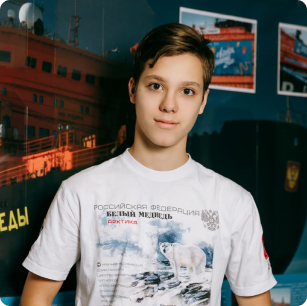
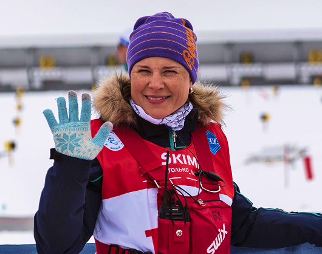
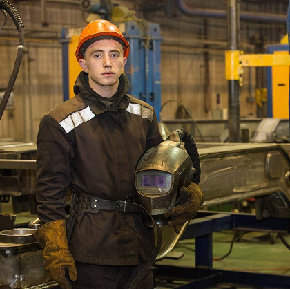

Руслан Лобашев
Один из лучших сварщиков России. Его путь к успеху начался в Тверском колледже имени Кайкова

Егор Карпушин
Ученик 9-го класса стал победителем образовательно- краеведческого проекта «Юный полярник»

Богалий Анна Ивановна
Главная задача Анны научить детей бороться и поддерживать в них интерес к спорту, воспитать в них командный дух, дисциплину и патриотизм

Руслан Лобашев
Один из лучших сварщиков России. Его путь к успеху начался в Тверском колледже имени Кайкова
Егор Карпушин
Ученик 9-го класса стал победителем образовательно- краеведческого проекта «Юный полярник»